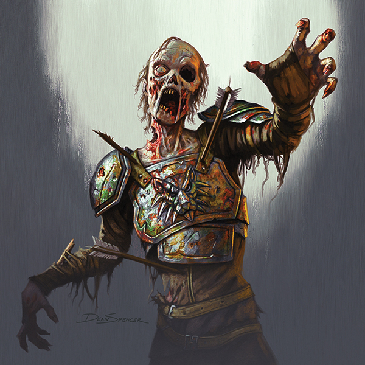
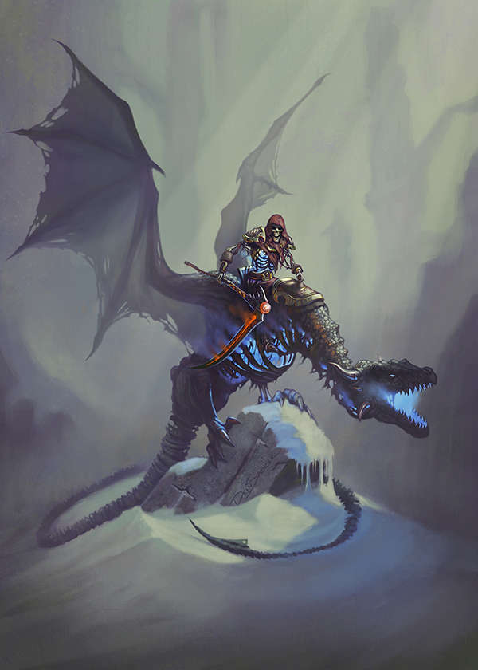
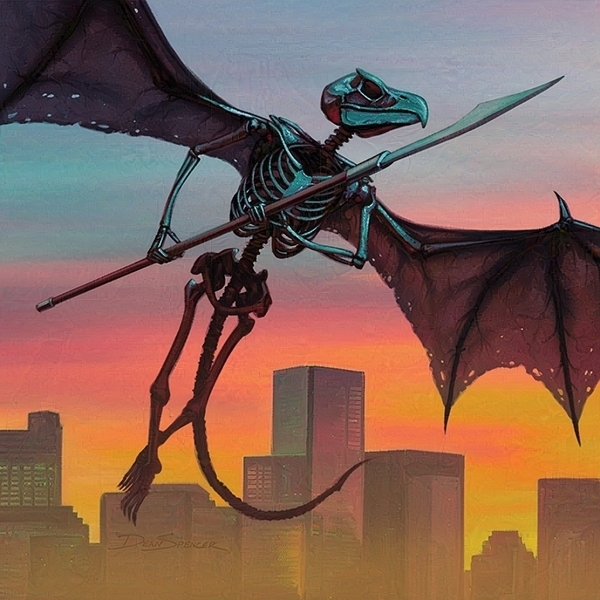
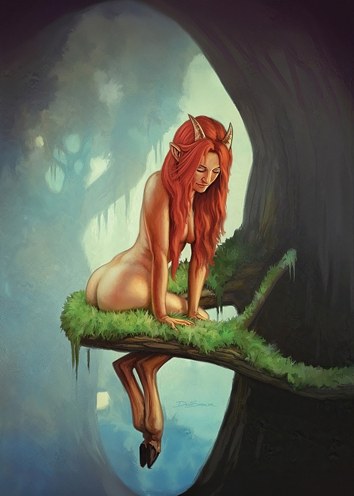
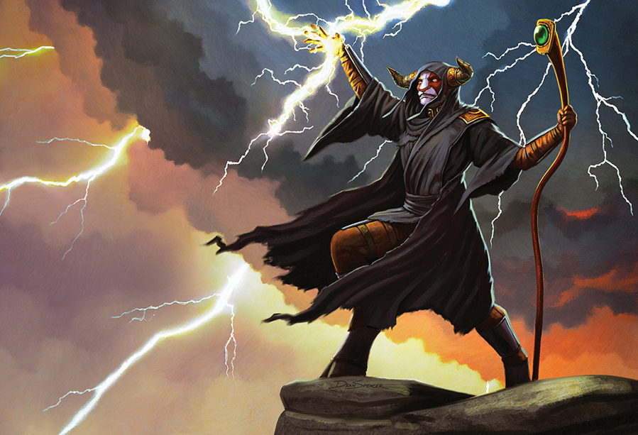
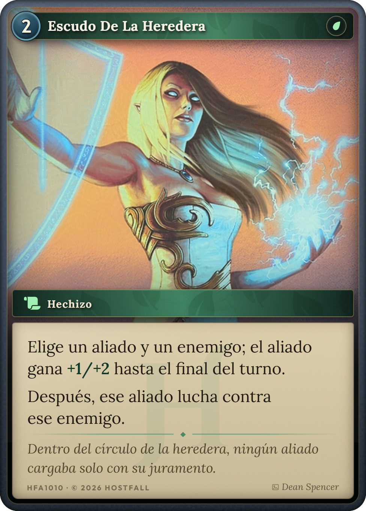
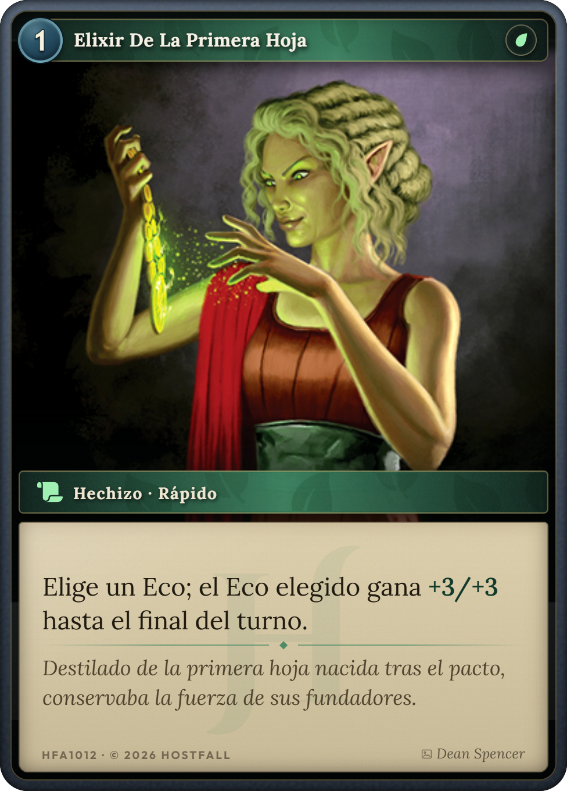
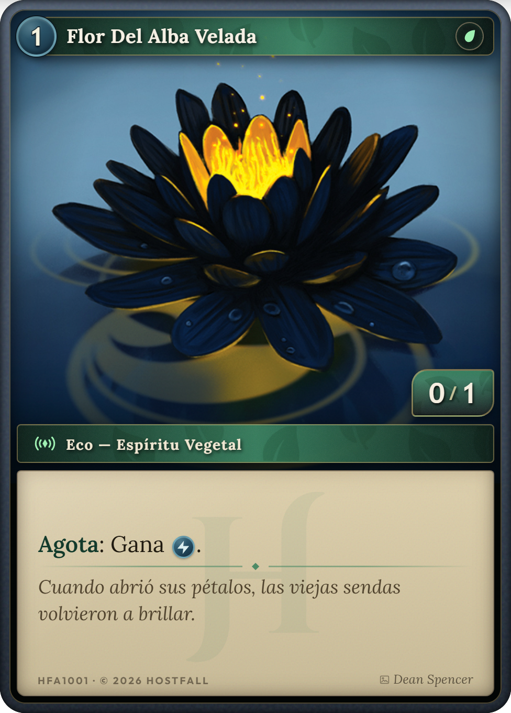
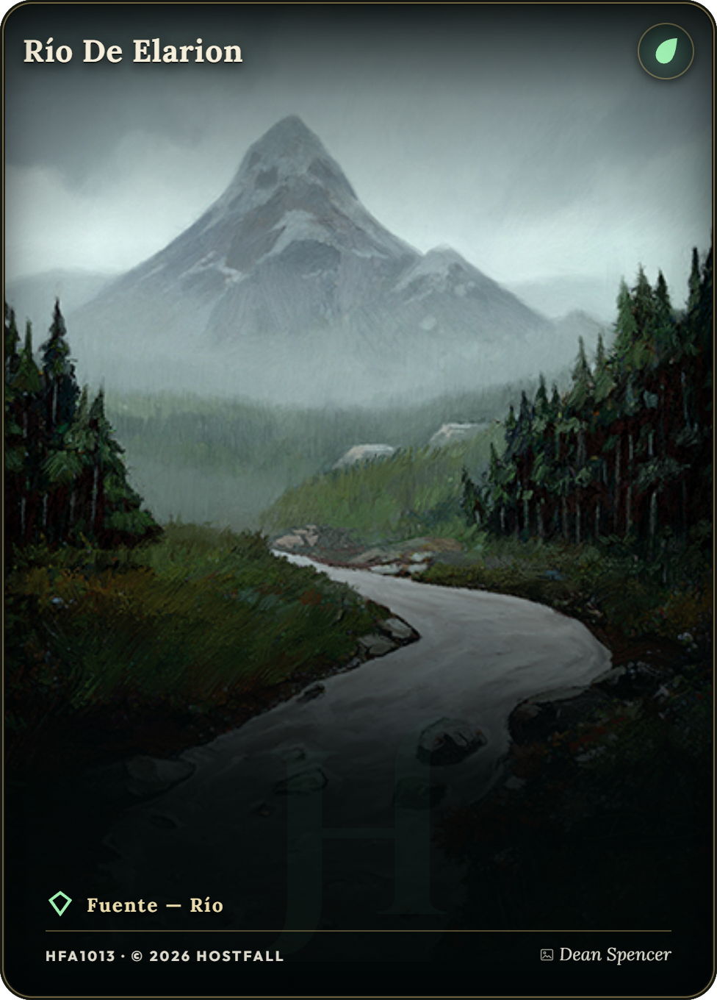

La mesa, con tres materiales
Misma geometría exacta que Board.tsx: barra de 72px, panel de la Hueste centrado arriba (304×82),
campo en dos filas de 424px, mano de 224px abajo y panel del Cronista abajo a la derecha (244×82) con la barra de
fases encima. Las cartas impresas no cambian —son las tuyas—; lo que cambia es la mesa y todo el marco alrededor.
Pasa el ratón por la mano.
Tablero y latón
nogal · fieltro verde · cartónEl campo se convierte en un tapete de fieltro embutido en la madera, con moldura de latón y un círculo impreso en el centro. Los HUD son fichas de cartón atornilladas a la mesa. Es literalmente un juego de mesa fotografiado desde arriba.











- El campo deja de ser vacío. Hoy las dos filas están sobre la misma foto de losa; aquí son un tapete con marco propio, así que se entiende dónde empieza y acaba la zona de juego.
- Los HUD son objetos. Cartón claro con doble filete impreso y tornillos, en vez de paneles translúcidos con borde de 1px.
- Contraste invertido en los números. Vida y Archivo en tinta oscura sobre claro: se leen mejor que el actual claro-sobre-oscuro con glow.
- Círculo central impreso. Marca el eje del duelo sin necesidad de una línea divisoria nueva.
Ojo: las cartas del juego son oscuras y el tapete es claro. Aquí funciona porque el fieltro es verde profundo, pero con una piel más clara las cartas empezarían a flotar.
Grimorio iluminado
vitela reglada · rúbrica · lapislázuliLa partida ocurre sobre la página: el campo es la caja de texto reglada de un manuscrito, con doble orla roja y dorada, y los HUD son cartelas iluminadas. Es la más coherente con «el Cronista reconstruye un Capítulo» y la más arriesgada, porque cambia la luminosidad de todo el juego.
- Las cartas destacan solas. Sobre vitela clara, las cartas oscuras se recortan sin necesidad de glow ni de sombras fuertes. Es el mejor argumento a favor de esta piel.
- La pauta reglada sustituye a los slots. Las líneas de escriba dan una retícula sutil donde apoyar las cartas, sin dibujar casillas.
- Rojo minio para el estado activo. La fase en curso, el turno y la Oleada usan el rojo de rúbrica; el azul queda para lo tuyo y el oro para el marco.
- La línea central es una cadeneta. Una línea discontinua roja separa los dos bandos como una anotación del manuscrito.
Coste real: casi todos los VFX actuales —brasas, destellos dorados, Burn— están calculados para fondo oscuro. Sobre vitela habría que rehacer buena parte de la biblioteca de efectos. Es la piel más cara con diferencia.
Heráldica de sangre y hierro
plancha de hierro · esmalte oxblood · oroLa mesa sigue oscura, así que todos los efectos actuales siguen valiendo, pero el campo pasa de losa gris a plancha de hierro con esmalte oxblood y orla dorada, y los HUD a tela con galón. Tu panel es verde heráldico y el de la Hueste rojo: los dos bandos tienen color propio.
- Cada bando tiene color. Rojo para la Hueste, verde heráldico para el Cronista. Hoy los dos paneles son casi el mismo gris con un filete de acento distinto.
- Orla dorada alrededor del campo. Encierra la zona de juego, algo que hoy no ocurre: el campo se funde con el fondo.
- Escudete en lugar de rombo. El mismo recorte de escudo se usa en emblemas, en el estado Agotado y en el paso de fase activo. Una sola forma para todo el HUD.
- Sigue siendo oscuro. Ni un solo VFX actual necesita retocarse: es la única de las tres que se puede aplicar de forma incremental.
Lo que diría después de verlas juntas
| Piel | Veredicto | Si la eliges |
|---|---|---|
| 3 · Heráldica | La apuesta sensata. Consigue el tono de juego de mesa medieval manteniendo la oscuridad, así que las cartas, los efectos y el arte actual siguen funcionando. | Se puede hacer por partes: primero el campo (orla + esmalte), luego los HUD. Nada obliga a rehacer VFX. |
| 1 · Tablero y latón | La más «juego de mesa» de las tres y la que más se aleja sin romper. El fieltro verde sostiene bien las cartas oscuras. | Es un cambio de dirección de arte completo: menú, preparación y mesa a la vez. No tiene sentido a medias. |
| 2 · Grimorio | La más bonita y la más alineada con el lore, pero cambia la luminosidad del juego entero. | Habría que rehacer la biblioteca de efectos, que hoy asume fondo oscuro. Yo la dejaría como dirección para un Acto II o para la pantalla de Colección, no para la mesa. |
Las cartas de la mano y el arte del campo son los reales; los marcos de las fichas del campo aquí son una
aproximación del componente Card, no su render exacto. Sirven para juzgar color y material, no el detalle
del marco de carta.